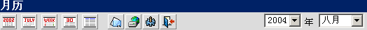

Open Webmail 使用指南
>>
日程表工具条
日程表工具条的运作是相似于主工具条的，但是它是一个为你订做的日程表。
日程表工具条：

参考图表:
|
名称 |
意义 |
 | 年历 | 按年查看，显示本年的日程表 |
 | 月历 | 按月查看，显示本月的日程表 |
 | 周历 | 按周查看，显示本周的日程表 |
 | 日历 | 按日查看，显示本日的日程表 |
|
| 项目列表 | 列出所有日程安排 |
 | 回到收件箱 | 回到WebMail主界面 |
 | 网络磁盘 | 打开网络磁盘 |
 | 个人模版 | 允许你改变自己个人偏好的设定 |
 | 退出 | 退出Open Webmail |
你也可以改变年份来显现相对的日期。只要点选“2004”栏，并将它改变成想要的年份。月份、每周、每日，事件内容都会切换到那个年份。
你可以在
这里
找出更多使用日程表的说明。
|